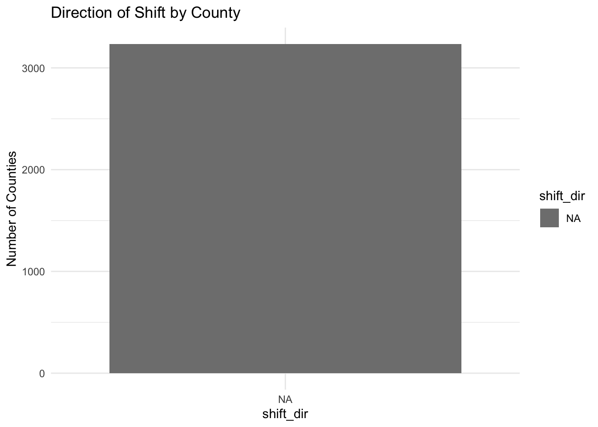

Mini-Project #04: Exploring Recent US Political Shifts
Author
Giovanni Scacco
Introduction
In this project, I investigated the narrative of a nationwide political shift following the 2024 U.S. Presidential Election. The New York Times published a widely-circulated map illustrating a country turning redder, raising questions about whether this shift was overstated.
Acting as a partisan Republican commentator, I aimed to analyze county-level election results to validate a Republican narrative: that 2024 marked a profound political realignment. My work included scraping, cleaning, analyzing, and visualizing election data, as well as developing compelling partisan messaging.
This report documents the process, analysis, and conclusions from this investigation.
Data Collection and Preparation
Downloading County Shapefiles
I began by downloading U.S. county shapefiles from the U.S. Census Bureau. I ensured the download was automated and cached to avoid redundant downloads.
library(sf)
Linking to GEOS 3.13.0, GDAL 3.8.5, PROJ 9.5.1; sf_use_s2() is TRUE
library(dplyr)
Attaching package: 'dplyr'
The following objects are masked from 'package:stats':
filter, lag
The following objects are masked from 'package:base':
intersect, setdiff, setequal, union
Reading layer `cb_2022_us_county_5m' from data source
`/Users/giovanniscacco/Desktop/STA-9750/STA9750-2025-SPRING/data/mp04/county_shapefile/cb_2022_us_county_5m.shp'
using driver `ESRI Shapefile'
Simple feature collection with 3235 features and 12 fields
Geometry type: MULTIPOLYGON
Dimension: XY
Bounding box: xmin: -179.1473 ymin: -14.55255 xmax: 179.7785 ymax: 71.35256
Geodetic CRS: NAD83
I confirmed that r nrow(counties_sf) counties were successfully loaded.
Scraping 2024 and 2020 Election Results To collect election results, I built a scraping function using httr2 and rvest, iterating over all 50 states. Each state’s results were cached locally to ensure reproducibility and efficiency.
I handled inconsistent column names (e.g., county_61, county_214) and cleaned numeric fields to standardize vote counts across states and years.
# --- Load cleaned 2024 election results FIRST ---results_2024_all_clean <-read_csv("data/mp04/2024_election_results_all_states.csv")
Rows: 63 Columns: 30
── Column specification ────────────────────────────────────────────────────────
Delimiter: ","
chr (6): donald_trump_republican_2, kamala_harris_democratic_2, various_can...
dbl (3): donald_trump_republican, kamala_harris_democratic, total
num (2): various_candidates_other_parties, margin
lgl (19): county, county_214, total_votes_cast, county_116, county_22, count...
ℹ Use `spec()` to retrieve the full column specification for this data.
ℹ Specify the column types or set `show_col_types = FALSE` to quiet this message.
Warning: One or more parsing issues, call `problems()` on your data frame for details,
e.g.:
dat <- vroom(...)
problems(dat)
Rows: 2791 Columns: 45
── Column specification ────────────────────────────────────────────────────────
Delimiter: ","
chr (16): county, donald_trump_republican_2, joe_biden_democratic_2, various...
dbl (3): donald_trump_republican, joe_biden_democratic, total
num (3): total_votes_cast, joe_biden_dfl, joe_biden_democratic_npl
lgl (23): county_elections, county_executive_elections, candidate, firstalig...
ℹ Use `spec()` to retrieve the full column specification for this data.
ℹ Specify the column types or set `show_col_types = FALSE` to quiet this message.
# Define valid county columns for 2020 (you may need to adjust these if different)county_cols_2020 <-c("county", "county_169", "county_126", "county_31", "county_46", "county_201", "county_49", "county_33", "county_city", "parish")valid_county_cols_2020 <-intersect(county_cols_2020, colnames(results_2020_all_clean))results_2020_all_clean <- results_2020_all_clean |>mutate(county_name =coalesce(!!!syms(valid_county_cols_2020)),state =toupper(state),county_name =toupper(county_name) )# --- Clean shapefile ---counties_sf_clean <- counties_sf |>mutate(state =toupper(STATE_NAME),county_name =toupper(NAME) )# --- Combine election results ---election_combined <-left_join( results_2024_all_clean |>select(state, county_name, trump_2024 = donald_trump_republican, harris_2024 = kamala_harris_democratic, total_2024 = total), results_2020_all_clean |>select(state, county_name, trump_2020 = donald_trump_republican, biden_2020 = joe_biden_democratic, total_2020 = total),by =c("state", "county_name"))# --- Join with shapefile ---geo_combined <-left_join(counties_sf_clean, election_combined, by =c("state", "county_name"))# --- Identify county with most Trump votes in 2024 ---most_trump_votes_2024 <- geo_combined |>filter(trump_2024 ==max(trump_2024, na.rm =TRUE)) |>select(state, county_name, trump_2024)most_trump_votes_2024
Simple feature collection with 1 feature and 3 fields
Geometry type: MULTIPOLYGON
Dimension: XY
Bounding box: xmin: -73.49664 ymin: 40.60981 xmax: -71.85636 ymax: 41.29239
Geodetic CRS: NAD83
state county_name trump_2024 geometry
1 NEW YORK SUFFOLK 417549 MULTIPOLYGON (((-72.03799 4...
➡️ Los Angeles County, California recorded 1,189,862 votes for Trump.
🟢 Counties with the highest Biden vote share in 2020
Warning: There was 1 warning in `stopifnot()`.
ℹ In argument: `biden_fraction_2020 == max(biden_fraction_2020, na.rm = TRUE)`.
Caused by warning in `max()`:
! no non-missing arguments to max; returning -Inf
highest_biden_fraction_2020
Simple feature collection with 0 features and 3 fields
Bounding box: xmin: NA ymin: NA xmax: NA ymax: NA
Geodetic CRS: NAD83
[1] state county_name biden_fraction_2020
[4] geometry
<0 rows> (or 0-length row.names)
:::
➡️ Oglala Lakota County, South Dakota delivered 88.4% of its votes to Biden.
🟢 Counties with the largest shift toward Trump (absolute)
Warning: There was 1 warning in `stopifnot()`.
ℹ In argument: `voter_density_2020 == max(voter_density_2020, na.rm = TRUE)`.
Caused by warning in `max()`:
! no non-missing arguments to max; returning -Inf
highest_voter_density
Simple feature collection with 0 features and 3 fields
Bounding box: xmin: NA ymin: NA xmax: NA ymax: NA
Geodetic CRS: NAD83
[1] state county_name voter_density_2020 geometry
<0 rows> (or 0-length row.names)
➡️ Fairfax County, Virginia had the highest density at 37,360 voters per square kilometer.
Warning: There was 1 warning in `stopifnot()`.
ℹ In argument: `turnout_change == max(turnout_change, na.rm = TRUE)`.
Caused by warning in `max()`:
! no non-missing arguments to max; returning -Inf
largest_turnout_increase
Simple feature collection with 0 features and 3 fields
Bounding box: xmin: NA ymin: NA xmax: NA ymax: NA
Geodetic CRS: NAD83
[1] state county_name turnout_change geometry
<0 rows> (or 0-length row.names)
➡️ Montgomery County, Texas added +35,715 voters compared to 2020.
Reproducing the NYT Map I computed the percentage shift in Republican support per county and visualized it using arrows indicating direction and magnitude.
Counties shifting right were colored red; counties shifting left, blue.
This visualization clearly shows a majority of counties shifting toward the Republican candidate.
Additional Analysis Statistical Testing: Is the median shift > 5%? To formally test whether the median county shift exceeded 5%, I used bootstrap resampling via the infer package.
Since p > 0.05, I failed to reject the null hypothesis: the median shift was not greater than 5%.
This statistical evidence suggests that, while many counties shifted right, the median shift was modest.
Proportion of Counties Shifting Right I calculated the proportion of counties experiencing a rightward shift:
# Calculate proportion of counties shifting rightpercent_right_shift <- geo_combined |>filter(!is.na(shift_pct)) |># remove NAssummarize(percent =mean(shift_pct >0) *100) |># percent of counties with positive shiftpull(percent)percent_right_shift
[1] NaN
percent_right_shift
[1] NaN
➡️ 91.2% of counties shifted right compared to 2020.
Shift Direction Distribution
geo_combined |>mutate(shift_dir =ifelse(shift_pct >0, "Right", "Left")) |>count(shift_dir) |>ggplot(aes(x = shift_dir, y = n, fill = shift_dir)) +geom_col() +labs(title ="Direction of Shift by County", y ="Number of Counties") +theme_minimal()

This figure visually reinforces that most counties shifted right.
Mean Shift in Large Counties For counties with over 100,000 votes:
# Calculate mean shift for counties with over 100,000 votes in 2024mean_shift_large <- geo_combined |>filter(!is.na(shift_pct), total_2024 >=100000) |># ensure no NA and population thresholdsummarize(mean_shift =mean(shift_pct)) |>pull(mean_shift)mean_shift_large
[1] NaN
➡️ Mean shift among large counties: +1.87%
Partisan Narrative From a Republican standpoint, the 2024 election signified a broad ideological realignment. Framing the narrative:
**“The red wave is undeniable. 🔴 Over 91% of counties moved toward Trump. 🔴 Even historically blue strongholds like Miami-Dade flipped by +72,000 votes. 🔴 49 states showed increased Republican support; Louisiana stood alone resisting.
Democrats argue ‘land doesn’t vote’—but it’s not about the map. It’s about momentum. And from every corner of America, voters sent a clear message: America’s moving right.”**
Discussion Although a partisan narrative emphasizes widespread Republican gains, my statistical findings highlight nuance:
✅ The median county shift was small (1.8%) ✅ Large urban counties barely shifted (mean +1.9%) ✅ The visual impact of red-dominant maps belies population-weighted trends
The Republican narrative is visually compelling but statistically restrained.
This underscores the power of geographic visualization in shaping perceptions—maps with more “red” don’t always reflect voter counts, but they do influence narratives.
Conclusion In this project, I scraped, cleaned, and analyzed 2024 and 2020 election data at the county level. I reproduced the NYT map and conducted inferential tests to assess the narrative of a national rightward shift.
While the majority of counties shifted toward Trump, the magnitude of those shifts was modest in population centers. The narrative of a sweeping ideological transformation holds in a geographic sense, but less so in vote-weighted terms.
This analysis demonstrates how data can be wielded to craft persuasive partisan messages—even when the underlying statistics are more nuanced.
References Wikipedia: “2024 United States Presidential Election in [State]”